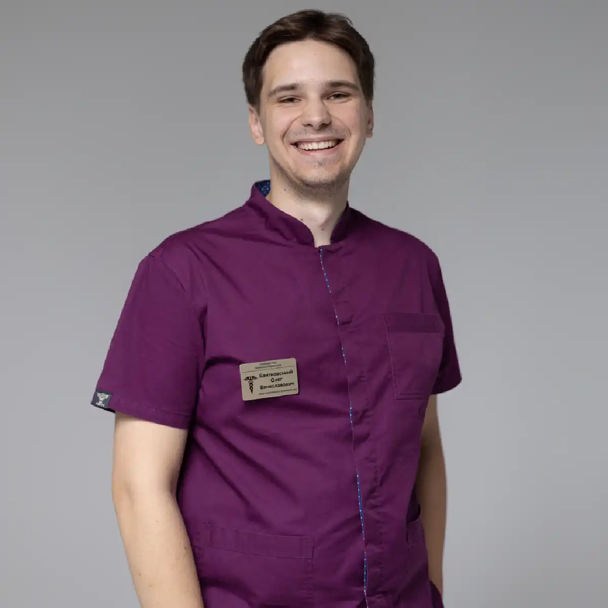

+38(068) 79 72 782
+38(068) 79 72 782Виведення з тижневого запою у Харкові
Стабілізація стану та подальше відновлення


Безкоштовна консультація, працюємо цілодобово 24/7
Стабілізація стану та подальше відновлення

Дата написання: 6 вер. 2026 р.
Останнє оновлення: 8 вер. 2026 р.
Виведення із запою після тижневого вживання алкоголю в Харкові потребує особливо уважної оцінки стану пацієнта. Сім днів регулярного вживання спиртного можуть супроводжуватися зневодненням, порушенням сну та харчування, коливаннями артеріального тиску, тремором, тривожністю та розвитком алкогольного абстинентного синдрому після припинення вживання. Виведення із запою в Харкові після тижневого вживання починається з медичного огляду. Лікар уточнює вік пацієнта, кількість і вид вживаного алкоголю, час останньої дози, наявність хронічних захворювань та попередніх епізодів тяжкої абстиненції.
Тиждень безперервного вживання алкоголю створює значне навантаження на організм. Людина може недостатньо їсти, мало пити звичайної рідини, погано спати та регулярно отримувати нові дози етанолу. На цьому тлі можливий розвиток зневоднення, порушень водно-електролітного балансу, прискореного серцебиття, коливань артеріального тиску, вираженої слабкості та порушень з боку травної системи. Додаткова небезпека виникає після припинення вживання. У людини з алкогольною залежністю може розвинутися виражений синдром відміни. Якщо стан погіршується, людина не може самостійно припинити вживання або з’являються виражений тремор, сильна тривожність, повторне блювання та різкі коливання тиску, може знадобитися терміново викликати лікаря-нарколога додому. При судомах, галюцинаціях, вираженій дезорієнтації, втраті свідомості, утрудненому диханні або болю в грудях домашній візит не повинен замінювати екстрену медичну допомогу. Тому тижневий запій не можна оцінювати лише за кількістю випитого. Важливо враховувати загальний стан пацієнта та те, як організм реагує на зниження концентрації алкоголю.
Після семи днів вживання симптоми можуть значно відрізнятися у різних людей. Часто спостерігаються слабкість, сухість у роті, спрага, головний біль, нудота, зниження апетиту та порушення сну. При розвитку алкогольної абстиненції характерні тремор рук, тривожність, дратівливість, пітливість, серцебиття та виражене внутрішнє напруження. Можуть виникати коливання артеріального тиску та відчуття нестачі повітря. Деякі пацієнти практично не можуть заснути після припинення вживання. Найнебезпечнішими ознаками є судоми, галюцинації, виражене сплутане свідомість, дезорієнтація та психомоторне збудження.
Після тижневого вживання звернутися до лікаря бажано вже при вираженому погіршенні самопочуття, особливо якщо людина раніше тяжко переносила припинення алкоголю. Особливо насторожують сильний тремор, багаторазове блювання, неможливість пити воду, виражена тахікардія, значні коливання тиску та практично повна відсутність сну. Екстрена наркологічна допомога необхідна при судомах, втраті свідомості, галюцинаціях, вираженому сплутаному свідомості, порушенні дихання, сильному болю в грудях або швидкому погіршенні стану. У подібних ситуаціях домашня крапельниця не повинна використовуватися замість повноцінної медичної допомоги.
Виведення із запою після тижневого вживання починається з огляду. Лікар оцінює свідомість пацієнта, тиск, пульс, дихання, вираженість зневоднення та прояви синдрому відміни. Уточнюється, коли алкоголь вживався востаннє, скільки приблизно людина випивала щодня, чи виникали раніше судоми або галюцинації та які хронічні захворювання є. Після цього визначається тактика. При стабільному стані може проводитися симптоматична та інфузійна терапія з подальшим спостереженням. Якщо ризик ускладнень високий, пацієнту рекомендують стаціонар, де стан можна контролювати цілодобово.
Виведення із запою вдома в Харкові після тижня вживання можливе далеко не завжди. Домашній формат може розглядатися, якщо пацієнт перебуває у ясній свідомості, його основні життєві показники відносно стабільні та відсутні ознаки тяжкої абстиненції. Перед початком лікування необхідно оцінити ризик ускладнень. Самостійно визначити його лише за зовнішнім виглядом пацієнта складно. Якщо людина дезорієнтована, поводиться незвично, бачить або чує те, чого немає, перенесла судоми або її стан швидко погіршується, потрібен інший рівень медичної допомоги.
Виведення із запою в стаціонарі може бути необхідним після тривалого вживання, якщо стан пацієнта потребує постійного медичного спостереження. Показаннями для термінової оцінки є судоми, галюцинації, виражене сплутане свідомість, психомоторне збудження, порушення дихання та інші ознаки тяжкого стану. Стаціонар також є кращим варіантом при серйозних захворюваннях серця, печінки, нирок, нервової системи та при високому ризику ускладнень синдрому відміни. Перевага стаціонару полягає у можливості цілодобово контролювати стан та оперативно коригувати терапію.
Крапельниця після запою може застосовуватися для корекції зневоднення та інших порушень, якщо лікар бачить відповідні показання. Після тижневого вживання пацієнт нерідко приходить на огляд із вираженою слабкістю, недостатнім споживанням рідини, нудотою та порушенням харчування. Однак крапельниця не є універсальним лікуванням усіх наслідків запою. Вона не замінює оцінку ризику абстиненції та не усуває алкогольну залежність. Необхідність інфузійної терапії, її обсяг і тривалість визначаються після медичного огляду.
Єдиного складу крапельниці від запою після тривалого вживання не існує. Схема залежить від стану конкретного пацієнта. Залежно від медичних показань можуть використовуватися інфузійні розчини для корекції зневоднення та порушень водно-електролітного балансу, а також симптоматична терапія. Додатково лікар враховує вираженість нудоти, тремору, тривожності, показники артеріального тиску та пульсу. Самостійно повторювати склад раніше призначеної крапельниці небажано, оскільки стан пацієнта після різних епізодів вживання може суттєво відрізнятися.
Склад лікування підбирається лише після оцінки стану пацієнта. Консультація лікаря-нарколога дозволяє визначити тяжкість запою, ризик ускладнень та необхідний обсяг медичної допомоги. Фахівець враховує тривалість вживання, приблизну кількість алкоголю, вираженість зневоднення, показники артеріального тиску та пульсу, а також наявність хронічних захворювань. Важливо також повідомити лікарю, які препарати людина вже приймала самостійно. За необхідності схема терапії коригується залежно від реакції організму та динаміки симптомів. Основне завдання полягає не в призначенні максимальної кількості препаратів, а у виборі обґрунтованого та безпечного обсягу допомоги.
Точного часу, однакового для всіх пацієнтів, немає. Після тижневого вживання деяким людям потрібно кілька етапів медичної допомоги та спостереження. Навіть якщо після першої процедури людина почувається значно краще, симптоми синдрому відміни можуть зберігатися або змінюватися. Лікар оцінює динаміку тиску, пульсу, свідомості, тремору, сну та інших проявів. Тому зняття запою після семи днів вживання не слід оцінювати лише за тривалістю однієї крапельниці.
Значно покращити стан за один день іноді можливо, однак термінове виведення із запою не означає, що після тижневого вживання організм повністю відновиться за кілька годин. Навіть після зменшення слабкості, нудоти або зневоднення можуть зберігатися безсоння, тривожність, тремор та інші прояви синдрому відміни. Крім того, стан може змінюватися вже після початкового покращення. Тому при тривалому запої правильніше орієнтуватися на послідовну стабілізацію стану, медичне спостереження та своєчасну корекцію терапії, а не лише на максимально швидке проведення однієї процедури.
Детоксикація від алкоголю після тижневого вживання спрямована на стабілізацію стану пацієнта та корекцію наслідків тривалого прийому спиртного. Вона може включати медичний огляд, контроль основних життєвих показників, інфузійну терапію за показаннями та симптоматичне лікування. При цьому термін «детоксикація» не означає, що одна процедура миттєво усуне всі наслідки вживання алкоголю. Після фізичної стабілізації людині може знадобитися подальше лікування абстинентного синдрому та алкогольної залежності.
Зняття алкогольної інтоксикації та лікування синдрому відміни — не повністю однакові завдання. Поки алкоголь продовжує впливати на організм, можуть переважати симптоми інтоксикації. Після зниження його концентрації у залежної людини можуть посилюватися прояви абстиненції. Тому після тижневого запою важливо враховувати час останнього вживання та динаміку симптомів. Медична допомога підбирається виходячи з поточного стану пацієнта, а не лише факту вживання алкоголю протягом семи днів.
Після припинення тижневого вживання у людини зі сформованою залежністю може розвиватися виражений синдром відміни. Лікування алкогольного абстинентного синдрому спрямоване на контроль симптомів та зниження ризику ускладнень. Лікар оцінює вираженість тремору, тривожності, безсоння, пітливості, тахікардії та інших проявів. При тяжкій абстиненції потрібне стаціонарне спостереження, особливо якщо з’являються судоми, галюцинації або порушення свідомості.
Після тривалого регулярного вживання нервова система адаптується до постійного впливу алкоголю. Коли його надходження різко припиняється, може виникати стан підвищеної активності нервової системи. Людина починає відчувати сильну тривожність, тремор, пітливість, серцебиття та безсоння. Тому іноді пацієнт почувається гірше не під час вживання, а через деякий час після припинення спиртного. Це один з основних факторів, через які тижневий запій потребує більш уважного спостереження.
Спроба самостійно припинити тижневий запій може супроводжуватися непередбачуваним розвитком синдрому відміни. Особливо ризиковано приймати без призначення великі дози заспокійливих, снодійних або інших препаратів. Їх поєднання із залишковим алкоголем може бути небезпечним. Не рекомендується також намагатися постійно зменшувати симптоми новою порцією алкоголю. Це може продовжити запій. При вираженому треморі, безсонні, сильному збудженні, галюцинаціях або судомах необхідна медична оцінка.
Продовжувати вживання алкоголю як спосіб самостійного лікування синдрому відміни не є безпечною стратегією. Після тривалого регулярного вживання різке припинення спиртного може супроводжуватися вираженою або тяжкою абстиненцією. У такій ситуації доступна наркологічна допомога дозволяє оцінити ризик ускладнень та визначити, чи можна проводити лікування амбулаторно, чи пацієнту потрібне більш інтенсивне медичне спостереження. Пацієнтам із тижневим і тривалішим запоєм особливо важливо не намагатися самостійно підбирати схему поступового «зниження дози» алкоголю. Також небажано поєднувати спиртне із заспокійливими, снодійними або іншими лікарськими препаратами без призначення лікаря. При вираженому треморі, судомах, галюцинаціях, сплутаності свідомості або швидкому погіршенні стану необхідна термінова медична допомога.
Судомний напад після припинення тривалого вживання є серйозним симптомом. Він може бути пов’язаний з алкогольним синдромом відміни та потребує термінової медичної оцінки. Навіть якщо після нападу людина прийшла до тями та каже, що почувається краще, ігнорувати те, що сталося, не можна. При повторних судомах, порушенні свідомості або інших тяжких симптомах необхідна екстрена допомога.
Галюцинації після тижневого запою не можна вважати звичайним похміллям. Людина може бачити або чути те, чого насправді немає, ставати тривожною, збудженою або переставати правильно орієнтуватися в часі та місці. Виражена сплутаність свідомості та дезорієнтація можуть свідчити про тяжке ускладнення синдрому відміни. У таких випадках домашньої крапельниці недостатньо — необхідна термінова наркологічна допомога та вирішення питання про госпіталізацію.
Тремор рук є однією з частих ознак алкогольної абстиненції. Якщо він виражений та супроводжується безсонням, сильною тривожністю, пітливістю, серцебиттям і коливаннями тиску, бажано звернутися до лікаря. Не слід намагатися самостійно усунути тремтіння великою дозою заспокійливих або алкоголем. Фахівець оцінює тремор разом з іншими симптомами та визначає тяжкість синдрому відміни.
Безсоння після тривалого вживання трапляється часто та може зберігатися навіть після покращення фізичного стану. Людина відчуває труднощі із засинанням, часто прокидається, відчуває тривогу або практично не спить кілька ночей поспіль. Не рекомендується самостійно поєднувати снодійні препарати з алкоголем або використовувати сильнодіючі засоби без лікарської оцінки. При вираженому безсонні разом із сильним тремором, збудженням, галюцинаціями або зміною поведінки необхідна медична оцінка.
Виведення із тижневого запою вдома в Харкові може розглядатися лише після оцінки тяжкості стану. Лікар уточнює тривалість вживання, вимірює тиск і пульс, оцінює свідомість, дихання, ознаки зневоднення та вираженість абстиненції. При відносно стабільному стані частина терапії може проводитися вдома з подальшими рекомендаціями та спостереженням. Якщо ризик ускладнень підвищений, домашній формат замінюється стаціонарним лікуванням.
Виклик нарколога додому в Харкові дозволяє отримати первинну медичну оцінку безпосередньо за місцем перебування пацієнта. Під час звернення бажано повідомити вік людини, тривалість вживання, приблизну кількість алкоголю, час останньої дози та основні симптоми. Після огляду лікар визначає, чи можливе безпечне лікування вдома. Якщо з’являються ознаки тяжкого синдрому відміни або іншого небезпечного стану, фахівець рекомендує госпіталізацію.
Стан пацієнта після тижневого вживання може змінюватися в будь-який час доби. Тому можливість отримати медичну консультацію особливо важлива в перші години та дні після припинення алкоголю. Цілодобова допомога при запої дозволяє оцінити симптоми, що виникли, та визначити подальшу тактику. При судомах, галюцинаціях, втраті свідомості, вираженій дезорієнтації, утрудненому диханні або сильному болю в грудях необхідно звертатися по екстрену медичну допомогу.
Після семи днів вживання стаціонар може бути безпечнішим варіантом для пацієнтів із тяжкою абстиненцією або високим ризиком ускладнень. Наркологічний стаціонар забезпечує можливість постійного контролю стану, спостереження за тиском, пульсом, диханням та рівнем свідомості. За необхідності терапія швидко коригується, а також проводиться додаткова діагностика. Після стабілізації стану людина може продовжити лікування амбулаторно та перейти до терапії алкогольної залежності.
Вартість виведення із тижневого запою в Харкові починається від 2199 грн.
| Популярні послуги | Ціна |
|---|---|
| Нарколог Харків | Від 1500 грн |
| Крапельниця від алкоголю | Від 2199 грн |
| Виведення із запою вдома | Від 2199 грн |
| Кодування від алкоголізму | Від 6000 грн |
Після тижневого запою фізична стабілізація є лише першим етапом, особливо якщо подібні епізоди вже повторювалися. Лікування алкоголізму в Харкові допомагає працювати з причинами регулярного вживання, потягом до спиртного та факторами, які призводять до чергового запою. Програма може включати консультації нарколога, психотерапію, протирецидивне лікування та реабілітацію. Якщо обмежуватися лише повторними крапельницями після кожного запою, ризик повернення до вживання зберігається.
Цілодобова наркологічна допомога в Харкові може бути необхідною після тривалого вживання, коли стан людини змінюється вночі, вранці або у вихідні дні. Під час звернення важливо описати тривалість запою, вік пацієнта, час останнього вживання та симптоми, які спостерігаються зараз. При відносно стабільному стані може бути організована консультація або огляд фахівця. При тяжкому синдромі відміни може знадобитися стаціонарне лікування. Якщо з’являються судоми, галюцинації, втрата свідомості, виражена сплутаність свідомості, порушення дихання або швидке погіршення стану, необхідно звертатися по екстрену медичну допомогу. Після тижневого вживання головне завдання — не просто швидше поставити крапельницю, а безпечно пройти період припинення алкоголю та визначити подальший план лікування залежності.
Телефон для консультації та виклику нарколога додому в Харкові: +38(050-021-69-57)

Статтю перевірено експертом
Робулець Ольга
Лікар-нарколог, ординатор
Можливо цікава стаття:
Чи можна померти від пиятики

Так, ми суворо дотримуємося повної конфіденційності на всіх етапах лікування. Інформація про пацієнта, діагноз та проходження терапії не передається третім особам. Звернення до нас не тягне за собою постановку на облік. Ви можете бути впевнені у безпеці та анонімності.
Програма лікування розробляється індивідуально після консультації з фахівцем. Враховуються вид залежності, її тривалість, фізичний та психологічний стан пацієнта. Такий підхід дозволяє підвищити ефективність терапії та знизити ризик зриву. Ми не використовуємо шаблонні рішення.
Так, ми супроводжуємо пацієнтів і після основного курсу лікування. Проводяться консультації, рекомендації щодо адаптації та профілактики рецидивів. За потреби можлива подальша психологічна підтримка. Це допомагає зберегти результат та повернутися до повноцінного життя.
Анонимно

Никакими усилиями самостоятельно я не смогла преодолеть запой, и наступала ломка, сопровождаемая повышенным давлением и пульсом. Тогда я решила обратиться за помощью в клинику. Врачи оказали мне неоценимую поддержку! Уже прошел месяц, и я не только не употребляю алкоголь, но даже не испытываю к нему желания!
Анонимно
Могу с уверенностью порекомендовать данный центр для тех, кто ищет помощь при выводе из запоя. Я неоднократно обращался к ним и могу сказать, что цена соответствует качеству услуг. После проведения капельницы в клинике, вся тяга к алкоголю проходит, и я чувствую себя гораздо лучше. Это действительно эффективный метод, и я благодарен клинике за их профессионализм и заботу!
Анонимно
Неоднократно я пытался бросить алкоголь самостоятельно, но каждый раз уговаривал себя продолжать. Я сначала ограничивался одной бутылкой в день, потом двумя, и в итоге вновь попадал в запой. Но в итоге, я смог прекратить употребление алкоголя только после того, как обратился в центр Амбрелла и заказал у них услугу вывода из запоя. Уже не пью 3 месяца и удалось полностью восстановиться. Благодарю врача который меня вел - Алексея Валерьевича.
Анонимно
Здравствуйте! Я хотел бы выразить свою искреннюю благодарность клинике за быстрое и профессиональное освобождение моего мужа пивного рабства! Ранее у меня уже не было никаких надежд на его выздоровление. Однако, благодаря вашим перспективным методам лечения, мы теперь идем к полному отказу от алкоголя. Вы дали нам новую надежду и оказали неоценимую помощь! Спасибо вам за все!
Анонимно
Я долгое время страдал от запоев и не мог справиться с этой проблемой. Однако, когда я обратился в этот центр, они быстро помогли мне вернуться на ноги, и самое главное - предоставили мне возможность не возвращаться к запоям. Уже почти полгода я не испытываю запоев! Это для меня настоящее чудо, я никогда не думал, что смогу так преодолеть свои проблемы. Большое спасибо центру Амбрелла!
Анонимно
Благодарю ваш центр Амбрелла за оперативное и высококачественное лечение! Женский алкоголизм - это настоящее горе, с которым невозможно справиться в одиночку. Я уже потеряла надежду, но благодаря вашей помощи, она вернулась ко мне! Отдельная благодарность врачу Станиславу Вячеславовичу, а также благодарность Богу за то, что он послал мне такое чудо как ваша центр! Спасибо вам всем!
Анонимно
Хочу выразить благодарность врачу Владиславу Алексеевичу за то, что вы избавили меня от этого ужаса. Я уже был в отчаянии, перепробовал множество клиник и центров, но только здесь я наконец получил настоящую помощь! Алкоголь полностью разрушил меня, и если бы не ваша помощь, я, возможно, уже не был бы жив. С вами я смог вернуть себе жизнь и буду благодарен вам всегда!
Номер телефону:
+380 (68) 797 27 82
+380 (50) 021 69 57
Адресу наркологічного центра вашого міста уточнюйте за
телефоном
Працюємо: Київ, Одеса, Львів, Харків, Дніпро, Запоріжжя,
Черкасах, Чугуєві, Чорноморську, Кам'янському
Telegram: t.me/umbrellaplus
Графік работы: Цілодобово